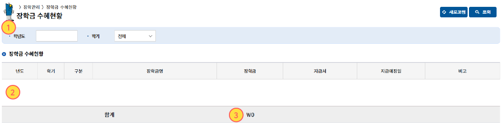
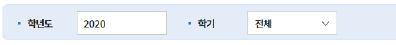
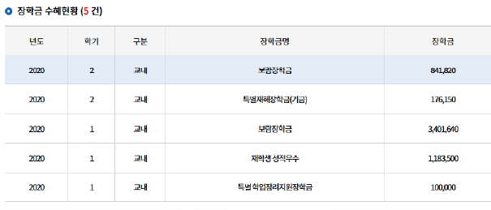
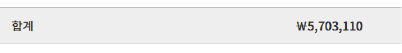

학사 시스템에서 장학금 수혜 이력을 조회하는 방법입니다. 아래 순서대로 따라하면 연도·학기별 장학금 수혜 내역과 합계 금액을 확인할 수 있습니다.
조회 화면 상단의 학년도 입력란과 학기 선택 항목에서 확인하고자 하는 조건을 선택합니다. 학기를 전체로 두면 해당 연도의 전체 내역을 확인할 수 있습니다.

조건을 선택한 후 우측의 조회 버튼을 눌러 장학금 수혜 이력을 불러옵니다. 필요 시 새로고침 버튼으로 조건을 초기화할 수 있습니다.

조회 결과에는 년도, 학기, 구분, 장학금명 등의 정보가 표시됩니다. 화면에 나타난 목록을 통해 어떤 장학금을 수혜했는지 확인할 수 있습니다.
목록 하단의 합계 영역에서 전체 장학금 수혜 금액을 확인할 수 있습니다.

아래는 실제 조회 화면에서 확인해야 하는 주요 영역을 표시한 예시입니다. ① 조회 조건 입력, ② 조회 결과 목록, ③ 합계 금액 순으로 확인하면 됩니다.
